library(tidyverse)
library(glue)
library(stringr)
library(gtsummary)
library(terra)16 PCA-kmeans Clustering Finalists
16.1 Overview
Original k-means: silhouette suggests 6, 9-11. C-H suggests 6, 11. Pairwise comparisons suggest 6, 8, or 11
PCA before k-means: silhouette suggests 4, 6, 8, 11. C-H 4-8 would be similar, 9-11 would be similar.
So between these two, it seems like it would make sense to compare 6, 8, 11.
# input files for spatial exploration of clusters
# generated in 22-pca-kmeans.qmd
prop1 <- read_csv("data/pca_mukey_cluster_assignments_and_soilprops.csv")
k4all <- rast("E:/big-files-backup/ch03-sh-groups/clust4_pca.tif")
k6all <- rast("E:/big-files-backup/ch03-sh-groups/clust6_pca.tif")
k8all <- rast("E:/big-files-backup/ch03-sh-groups/clust8_pca.tif")
k11all <- rast("E:/big-files-backup/ch03-sh-groups/clust11_pca.tif")# input files for taxonomic exploration of clusters
# generated ch7 map unit aggregation
mu <- read_csv("data/mu_weighted_soil_props.csv")
cmp_lookup <- read_csv("data/key_cokey_mukey_complete_cases_include.csv")
cmp_details <- read_csv("data/component_list.csv")
munames <- read_csv("data/target_mapunit_table.csv") %>%
select(mukey, muname, muacres)
# more rows than mu b/c there are multiple cmps
# included in some mus
mu_cmp <- left_join(mu, cmp_lookup, by = "mukey")
# adds munames and muacres
mu_cmp_nm <- left_join(mu_cmp, munames, by = "mukey")
# one row for each component (there can be multiple components
# for an included mukey), now includes munames and component details
mu_detail <- left_join(mu_cmp_nm, cmp_details, by = c("cokey","mukey"))
# for translating MUKEY from gSSURGO to my shortened version
cwalk <- aoi_mu <- read.delim("data/gSSURGO_MN/mukey_new_crosswalk.txt", sep = ",") %>%
select(MUKEY, MUKEY_New, Count) Cluster_0 Cluster_1 Cluster_2 Cluster_3 Cluster_4 Cluster_5 Cluster_6
"#FFF8DC" "#FF5A5F" "#FFB400" "#007A87" "#8CE071" "#7B0051" "#00D1C1"
Cluster_7 Cluster_8 Cluster_9 Cluster_10 Cluster_11 Cluster_12
"#FFAA91" "#B4A76C" "#9CA299" "#565A5C" "#00A04B" "#E54C20" 16.2 4 clusters
16.2.1 Summary table
create_summary_table(kcol = "k_4", prop_df = prop1)| Characteristic | Cluster_1, N = 2,0221 | Cluster_2, N = 2,8211 | Cluster_3, N = 1,5441 | Cluster_4, N = 4851 |
|---|---|---|---|---|
| claytotal | 9 (4) | 24 (8) | 24 (8) | 25 (12) |
| om | 2.27 (1.19) | 5.87 (10.03) | 5.56 (4.31) | 4.80 (1.65) |
| cec7 | 9 (4) | 24 (19) | 22 (10) | 22 (10) |
| dbthirdbar | 1.47 (0.10) | 1.30 (0.19) | 1.31 (0.20) | 1.28 (0.09) |
| ec | 0.01 (0.08) | 0.00 (0.03) | 0.00 (0.00) | 1.28 (0.52) |
| ph1to1h2o | 6.46 (0.49) | 6.60 (0.35) | 7.54 (0.31) | 7.53 (0.47) |
| caco3 | 0.4 (1.4) | 0.2 (0.8) | 9.4 (5.0) | 7.8 (6.2) |
| lep | 1.19 (0.47) | 2.88 (1.75) | 2.89 (1.71) | 3.53 (3.10) |
| ksat | 53 (36) | 9 (6) | 11 (9) | 12 (15) |
| awc | 0.13 (0.03) | 0.21 (0.04) | 0.20 (0.03) | 0.19 (0.03) |
| 1 Mean (SD) | ||||
16.2.2 Violin plots
plot_cluster_violins(kcol = k_4, claytotal, prop_df = prop1)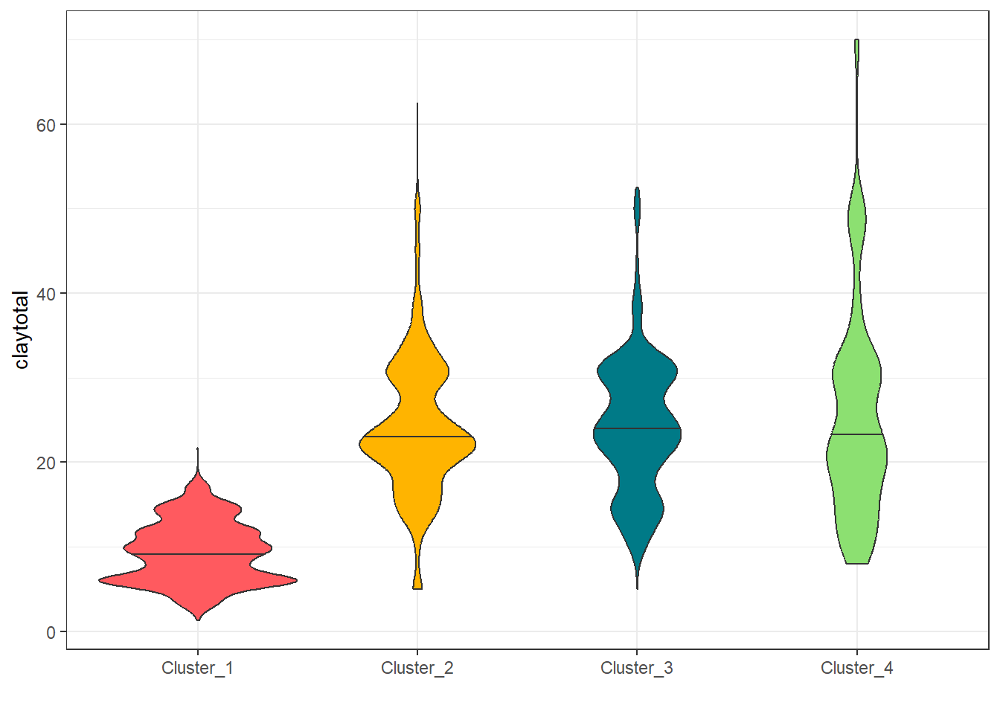
plot_cluster_violins(kcol = k_4, om, prop_df = prop1) + scale_y_log10()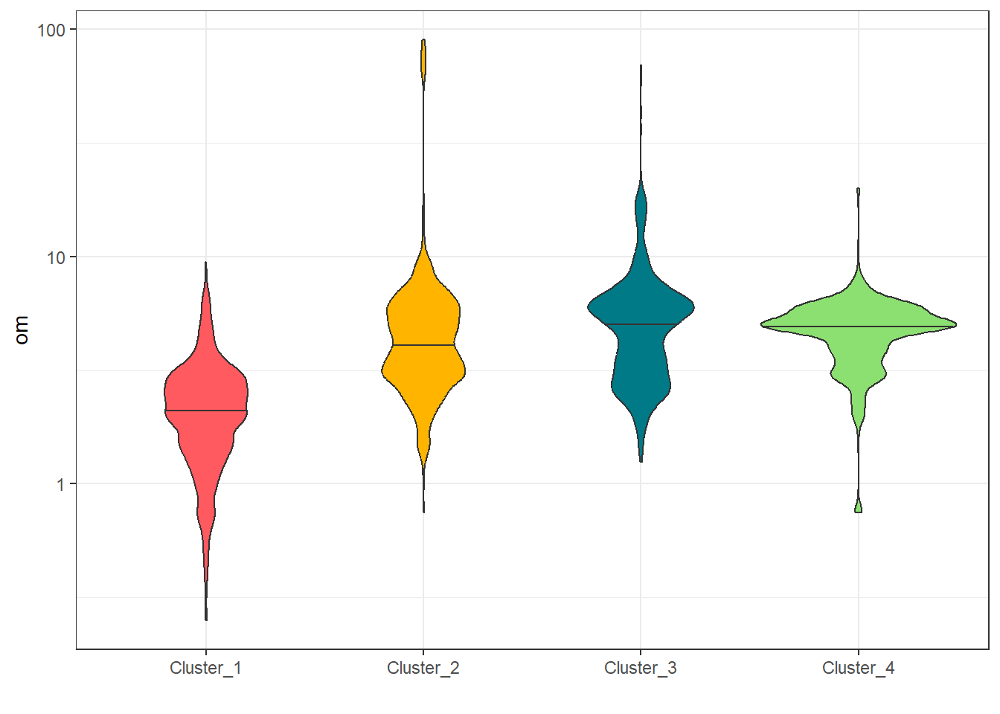
plot_cluster_violins(kcol = k_4, ph1to1h2o, prop_df = prop1)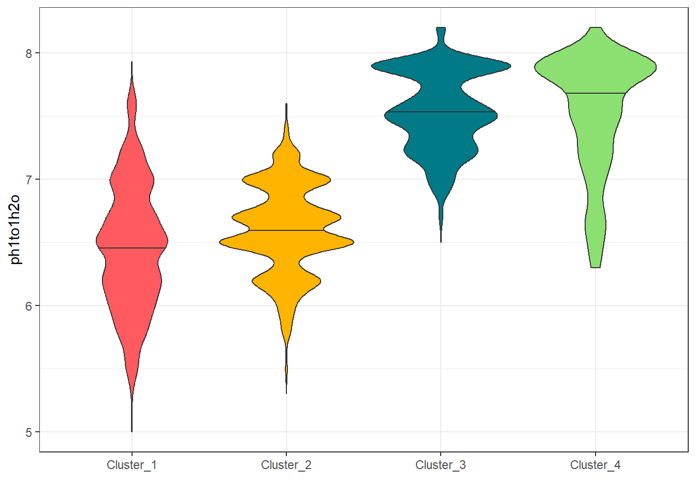
plot_cluster_violins(kcol = k_4, caco3, prop_df = prop1)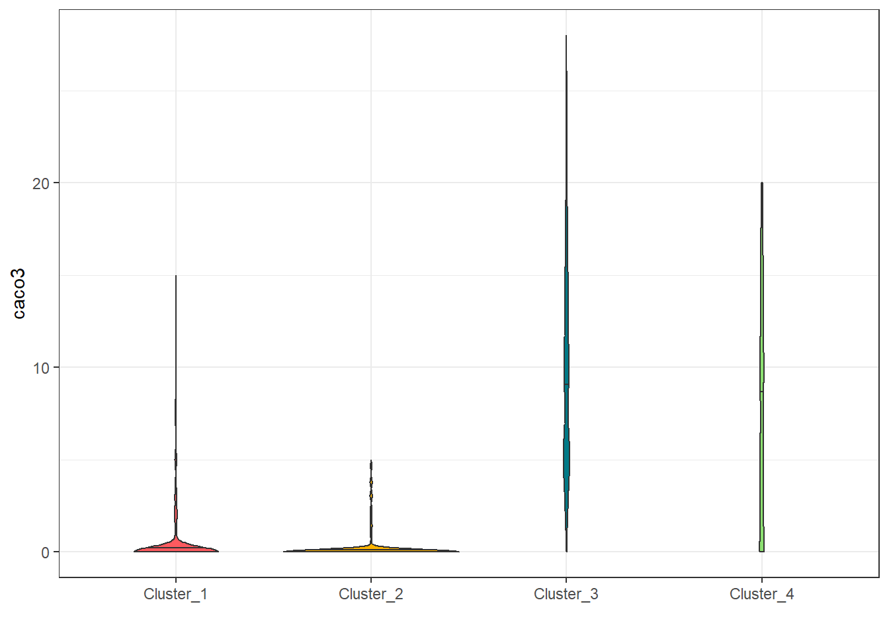
plot_cluster_violins(kcol = k_4, ec, prop_df = prop1)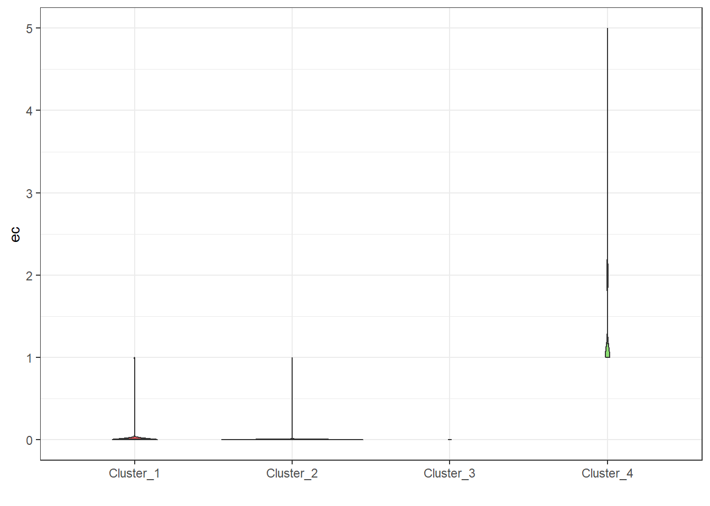
16.2.3 Maps
k4all_colors <- create_mapcol_df(4)
plot(k4all, col = k4all_colors, plg=list(legend = c("C0", "C1", "C2", "C3", "C4")), main = "k=4 all variables")16.2.4 Taxonomy
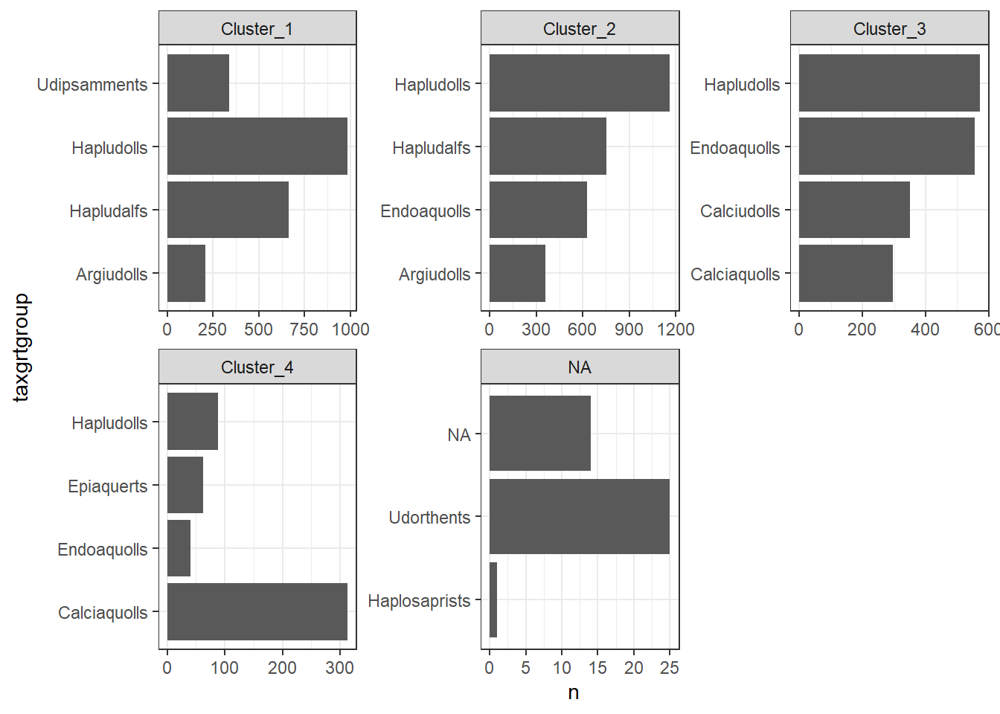
16.2.5 Visualize clusters in 2D
prop1 %>%
ggplot() +
geom_point(aes(x = claytotal, y = ph1to1h2o, color = k_4)) +
theme_bw()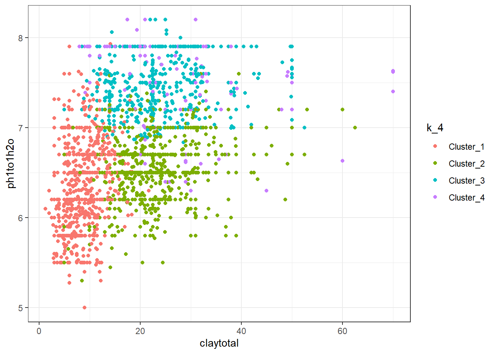
prop1 %>%
ggplot() +
geom_point(aes(x = claytotal, y = om, color = k_4)) +
theme_bw() +
scale_y_log10()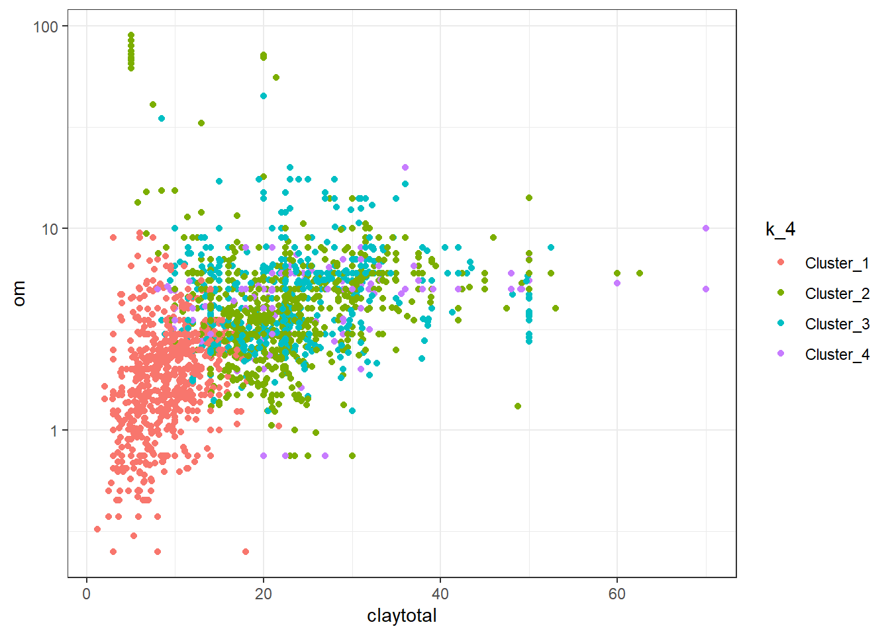
16.3 6 clusters
16.3.1 Summary table
create_summary_table(kcol = "k_6", prop_df = prop1)| Characteristic | Cluster_1, N = 1,1291 | Cluster_2, N = 2,1581 | Cluster_3, N = 1,6641 | Cluster_4, N = 1,4361 | Cluster_5, N = 4201 | Cluster_6, N = 651 |
|---|---|---|---|---|---|---|
| claytotal | 7 (2) | 16 (4) | 30 (8) | 24 (7) | 23 (11) | 7 (4) |
| om | 1.83 (0.99) | 3.20 (1.53) | 5.32 (2.00) | 5.35 (3.11) | 4.80 (1.71) | 69.79 (15.21) |
| cec7 | 7 (2) | 15 (4) | 26 (6) | 22 (7) | 20 (9) | 143 (28) |
| dbthirdbar | 1.50 (0.10) | 1.40 (0.09) | 1.29 (0.11) | 1.31 (0.19) | 1.28 (0.09) | 0.27 (0.15) |
| ec | 0.01 (0.10) | 0.00 (0.02) | 0.04 (0.20) | 0.00 (0.00) | 1.33 (0.54) | 0.00 (0.00) |
| ph1to1h2o | 6.41 (0.53) | 6.51 (0.38) | 6.73 (0.35) | 7.56 (0.32) | 7.63 (0.39) | 6.61 (0.42) |
| caco3 | 0.5 (1.5) | 0.3 (1.1) | 0.4 (1.2) | 9.8 (4.9) | 8.9 (5.8) | 1.5 (2.4) |
| lep | 1.08 (0.50) | 1.50 (0.54) | 4.21 (1.94) | 2.74 (1.46) | 3.00 (2.62) | 0.59 (0.31) |
| ksat | 73 (36) | 18 (11) | 6 (3) | 11 (9) | 14 (16) | 24 (5) |
| awc | 0.11 (0.02) | 0.18 (0.03) | 0.20 (0.02) | 0.19 (0.02) | 0.19 (0.03) | 0.40 (0.03) |
| 1 Mean (SD) | ||||||
16.3.2 Violin plots
plot_cluster_violins(kcol = k_6, claytotal, prop_df = prop1)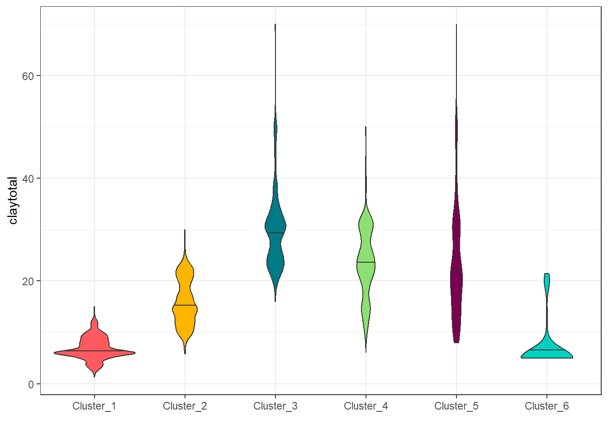
plot_cluster_violins(kcol = k_6, om, prop_df = prop1) + scale_y_log10()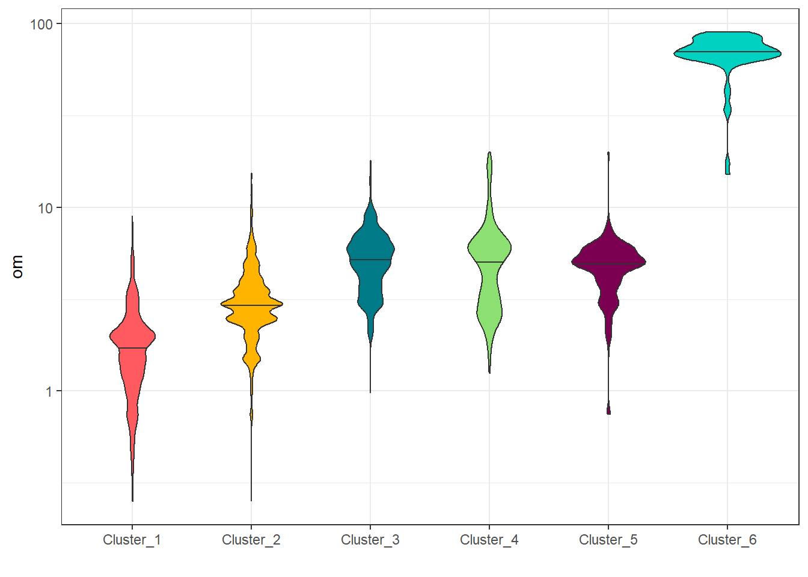
plot_cluster_violins(kcol = k_6, ph1to1h2o, prop_df = prop1)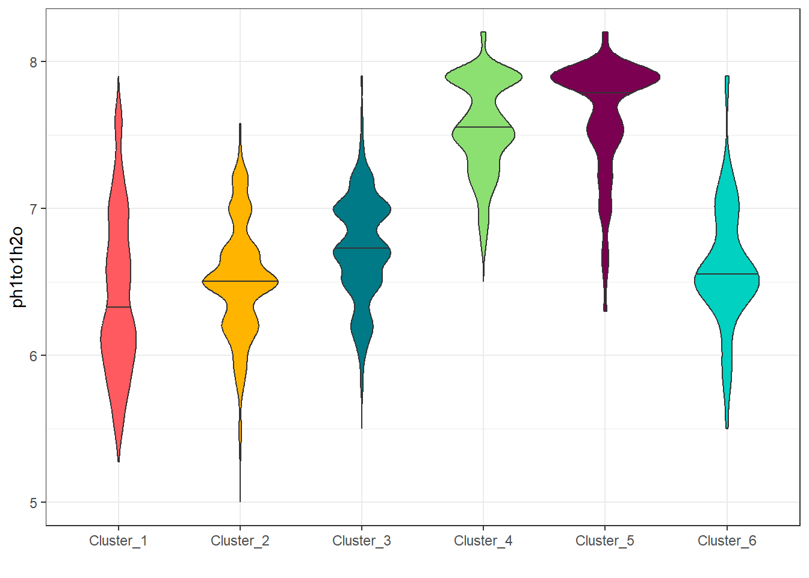
plot_cluster_violins(kcol = k_6, caco3, prop_df = prop1)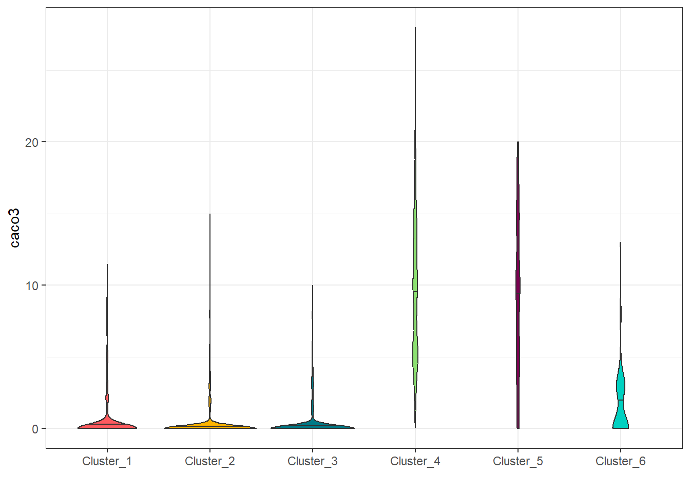
plot_cluster_violins(kcol = k_6, ec, prop_df = prop1)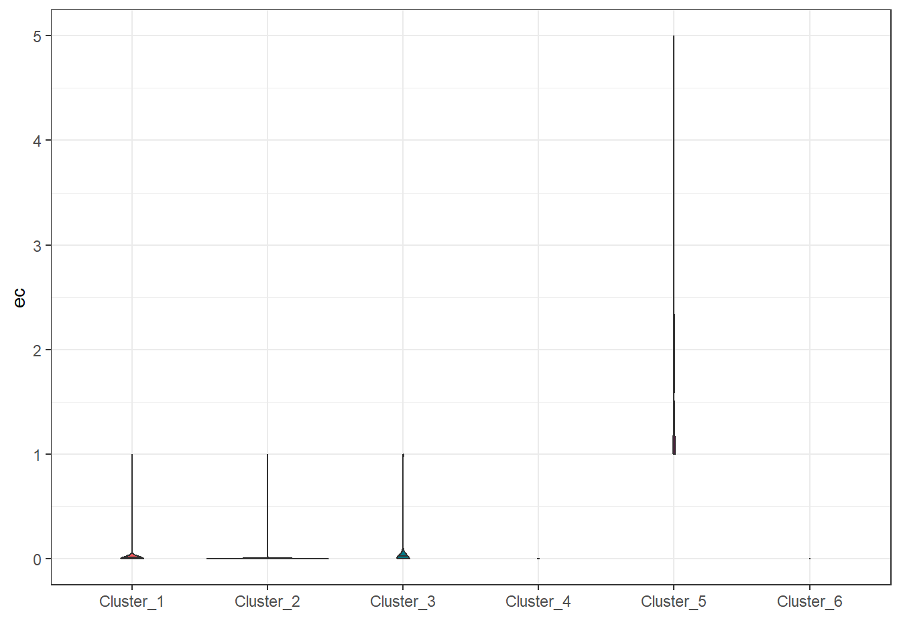
16.3.3 Maps
k6all_colors <- create_mapcol_df(6)
plot(k6all, col = k6all_colors, plg=list(legend = c("C0", "C1", "C2", "C3", "C4", "C5", "C6")), main = "k=6 all variables")16.3.4 Taxonomy
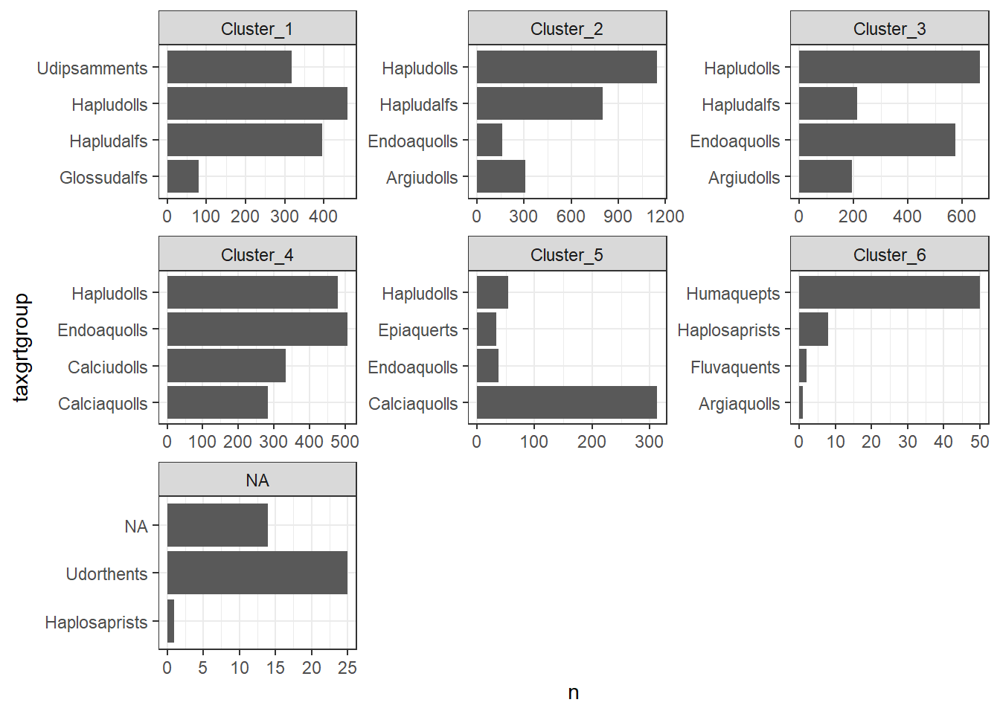
16.3.5 Visualize clusters in 2D
prop1 %>%
ggplot() +
geom_point(aes(x = claytotal, y = ph1to1h2o, color = k_6)) +
theme_bw()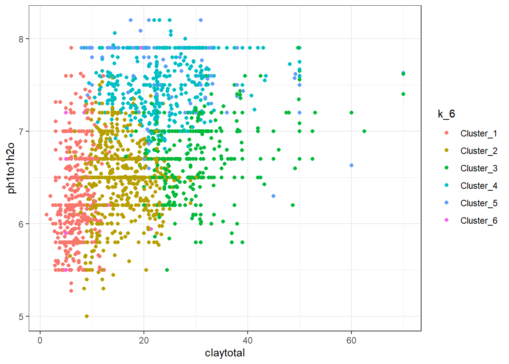
prop1 %>%
ggplot() +
geom_point(aes(x = claytotal, y = om, color = k_6)) +
theme_bw() +
scale_y_log10()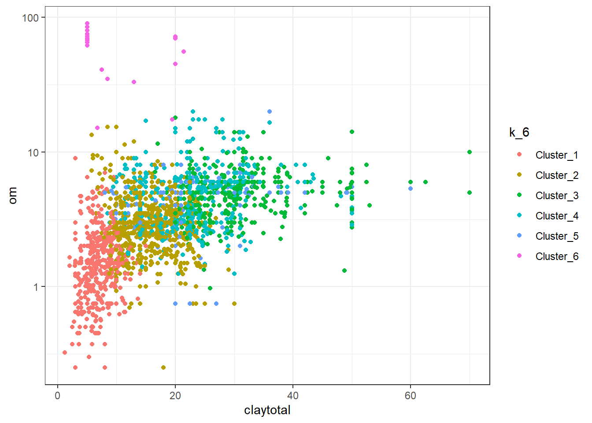
16.4 8 clusters - all variables included
16.4.1 Summary table
create_summary_table(kcol = "k_8", prop_df = prop1)| Characteristic | Cluster_1, N = 9131 | Cluster_2, N = 1,6291 | Cluster_3, N = 1,3511 | Cluster_4, N = 6281 | Cluster_5, N = 9711 | Cluster_6, N = 3821 | Cluster_7, N = 9331 | Cluster_8, N = 651 |
|---|---|---|---|---|---|---|---|---|
| claytotal | 6 (2) | 22 (4) | 12 (3) | 30 (6) | 34 (7) | 22 (9) | 19 (5) | 7 (4) |
| om | 1.66 (0.82) | 3.77 (1.79) | 2.94 (1.35) | 7.32 (3.34) | 6.03 (1.83) | 4.74 (1.40) | 3.90 (1.88) | 69.79 (15.21) |
| cec7 | 6 (2) | 19 (4) | 12 (3) | 28 (7) | 30 (6) | 19 (8) | 17 (4) | 143 (28) |
| dbthirdbar | 1.50 (0.10) | 1.35 (0.07) | 1.44 (0.09) | 1.21 (0.24) | 1.26 (0.13) | 1.28 (0.09) | 1.39 (0.08) | 0.27 (0.15) |
| ec | 0.01 (0.11) | 0.01 (0.11) | 0.00 (0.03) | 0.01 (0.12) | 0.08 (0.27) | 1.36 (0.56) | 0.00 (0.00) | 0.00 (0.00) |
| ph1to1h2o | 6.38 (0.51) | 6.51 (0.32) | 6.53 (0.43) | 7.66 (0.25) | 6.81 (0.35) | 7.67 (0.36) | 7.45 (0.35) | 6.61 (0.42) |
| caco3 | 0.3 (1.2) | 0.1 (0.5) | 0.3 (1.1) | 10.9 (4.9) | 0.5 (1.3) | 9.4 (5.7) | 8.4 (4.8) | 1.5 (2.4) |
| lep | 1.06 (0.51) | 2.32 (0.95) | 1.26 (0.46) | 3.91 (1.81) | 5.05 (2.16) | 2.58 (1.95) | 2.00 (0.92) | 0.59 (0.31) |
| ksat | 81 (34) | 10 (3) | 27 (14) | 6 (3) | 4 (3) | 15 (16) | 14 (11) | 24 (5) |
| awc | 0.10 (0.02) | 0.21 (0.02) | 0.16 (0.03) | 0.20 (0.02) | 0.19 (0.02) | 0.19 (0.03) | 0.19 (0.03) | 0.40 (0.03) |
| 1 Mean (SD) | ||||||||
16.4.2 Violin plots
plot_cluster_violins(kcol = k_8, claytotal, prop_df = prop1)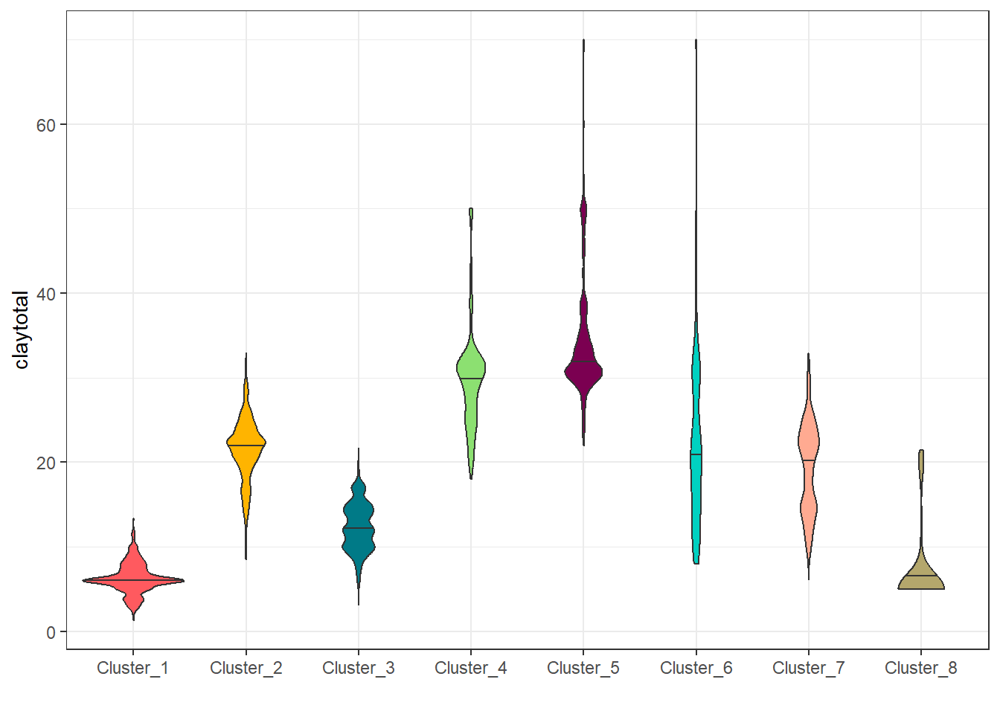
plot_cluster_violins(kcol = k_8, om, prop_df = prop1) + scale_y_log10()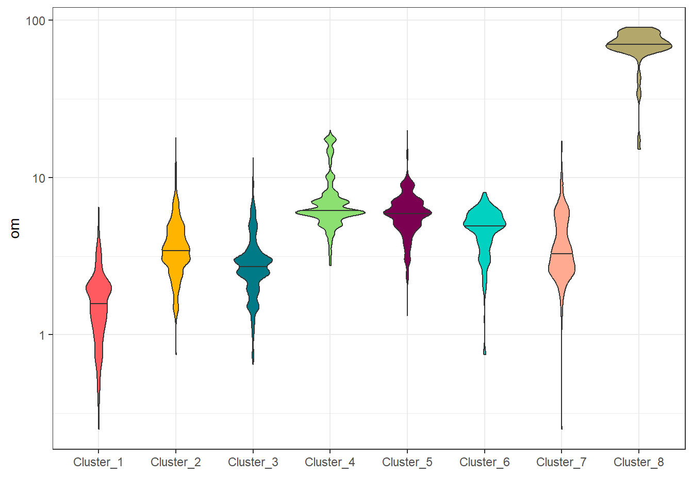
plot_cluster_violins(kcol = k_8, ph1to1h2o, prop_df = prop1)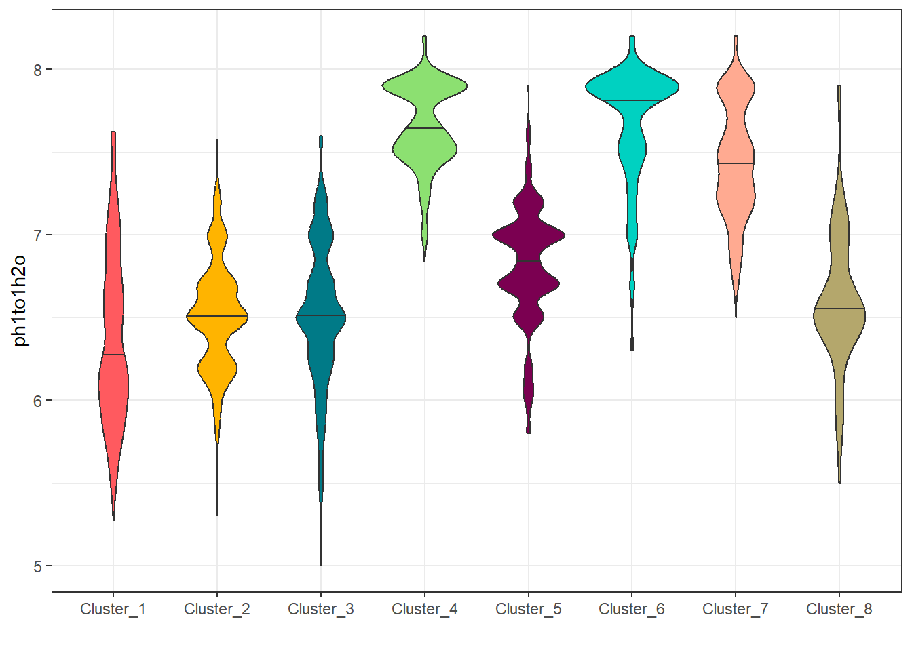
plot_cluster_violins(kcol = k_8, caco3, prop_df = prop1)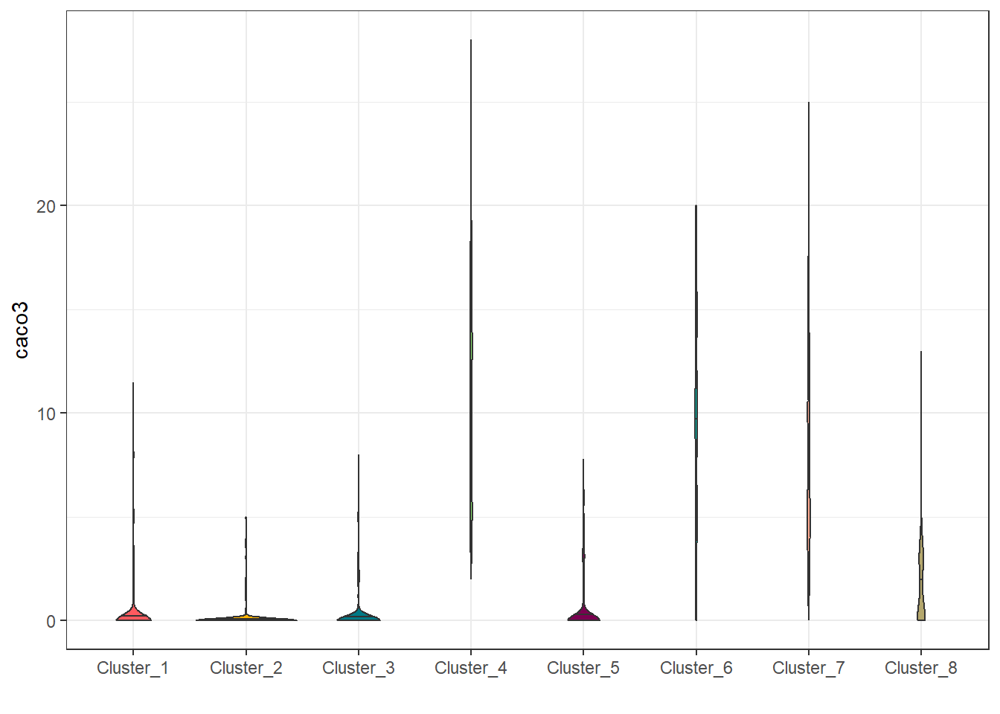
plot_cluster_violins(kcol = k_8, ec, prop_df = prop1)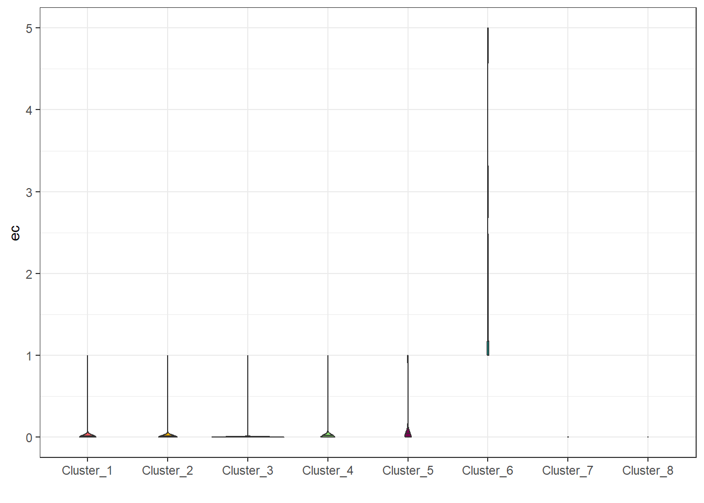
16.4.3 Maps
k8all_colors <- create_mapcol_df(8)
plot(k8all, col = k8all_colors, plg=list(legend = c("C0", "C1", "C2", "C3", "C4", "C5", "C6", "C7", "C8")), main = "k=8 all variables")16.4.4 Taxonomy
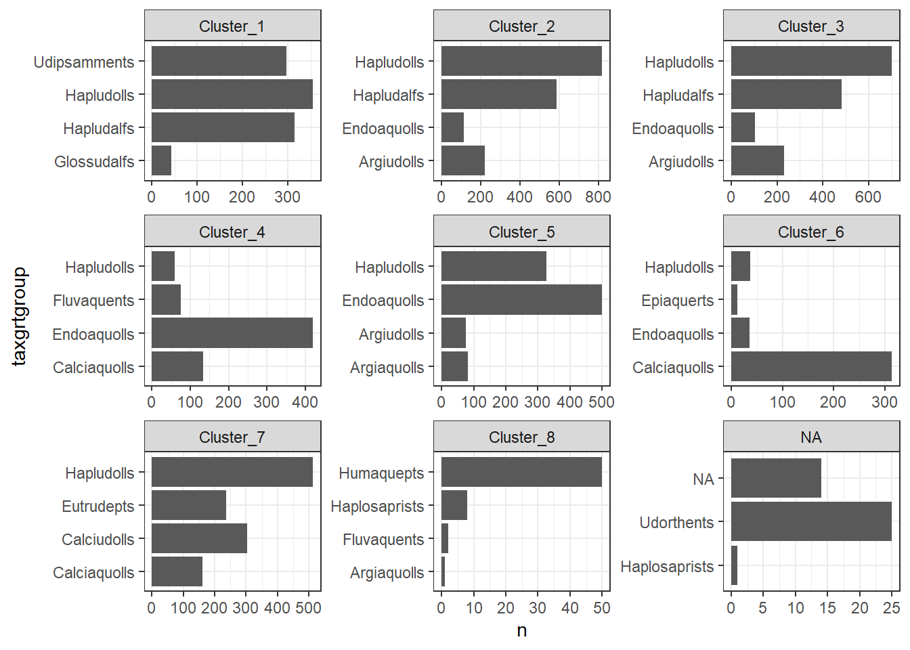
16.5 11 clusters - all variables
16.5.1 Summary table
create_summary_table(kcol = "k_11", prop_df = prop1)| Characteristic | Cluster_1, N = 4991 | Cluster_10, N = 2801 | Cluster_11, N = 651 | Cluster_2, N = 4701 | Cluster_3, N = 1,5311 | Cluster_4, N = 4731 | Cluster_5, N = 9031 | Cluster_6, N = 6181 | Cluster_7, N = 9191 | Cluster_8, N = 2041 | Cluster_9, N = 9101 |
|---|---|---|---|---|---|---|---|---|---|---|---|
| claytotal | 6 (2) | 18 (7) | 7 (4) | 7 (2) | 22 (3) | 13 (3) | 12 (3) | 30 (6) | 33 (6) | 35 (12) | 20 (5) |
| om | 1.28 (0.64) | 4.71 (1.44) | 69.79 (15.21) | 2.39 (1.05) | 3.61 (1.42) | 4.52 (2.55) | 2.39 (0.84) | 7.36 (3.35) | 6.06 (1.74) | 4.92 (1.91) | 3.85 (1.81) |
| cec7 | 5 (1) | 16 (6) | 143 (28) | 8 (2) | 19 (3) | 14 (6) | 12 (3) | 28 (7) | 29 (5) | 29 (8) | 18 (4) |
| dbthirdbar | 1.55 (0.06) | 1.28 (0.09) | 0.27 (0.15) | 1.43 (0.10) | 1.36 (0.07) | 1.34 (0.08) | 1.48 (0.07) | 1.20 (0.24) | 1.27 (0.13) | 1.26 (0.09) | 1.39 (0.08) |
| ec | 0.00 (0.00) | 1.45 (0.60) | 0.00 (0.00) | 0.03 (0.16) | 0.00 (0.00) | 0.01 (0.08) | 0.00 (0.00) | 0.00 (0.00) | 0.00 (0.00) | 1.05 (0.22) | 0.00 (0.00) |
| ph1to1h2o | 6.11 (0.36) | 7.80 (0.21) | 6.61 (0.42) | 6.85 (0.44) | 6.51 (0.32) | 6.66 (0.37) | 6.40 (0.42) | 7.66 (0.25) | 6.78 (0.34) | 7.16 (0.48) | 7.46 (0.35) |
| caco3 | 0.0 (0.5) | 11.3 (5.1) | 1.5 (2.4) | 1.3 (2.2) | 0.1 (0.5) | 0.3 (1.0) | 0.2 (0.7) | 10.9 (5.0) | 0.4 (1.1) | 3.1 (4.0) | 8.5 (4.8) |
| lep | 1.08 (0.53) | 1.83 (0.97) | 0.59 (0.31) | 1.05 (0.50) | 2.34 (0.92) | 0.98 (0.53) | 1.41 (0.33) | 3.84 (1.74) | 4.77 (1.73) | 5.90 (3.45) | 2.03 (0.93) |
| ksat | 88 (37) | 18 (18) | 24 (5) | 72 (27) | 9 (2) | 23 (13) | 26 (12) | 6 (3) | 4 (3) | 4 (4) | 14 (10) |
| awc | 0.10 (0.02) | 0.19 (0.03) | 0.40 (0.03) | 0.11 (0.01) | 0.21 (0.02) | 0.18 (0.03) | 0.15 (0.02) | 0.20 (0.02) | 0.19 (0.02) | 0.18 (0.03) | 0.19 (0.03) |
| 1 Mean (SD) | |||||||||||
rank_clusters(k_11, claytotal, prop1)rank_clusters(k_11, ph1to1h2o, prop1)rank_clusters(k_11, om, prop1)rank_clusters(k_11, caco3, prop1)16.5.2 Violin plots
plot_cluster_violins(kcol = k_11, claytotal, prop_df = prop1)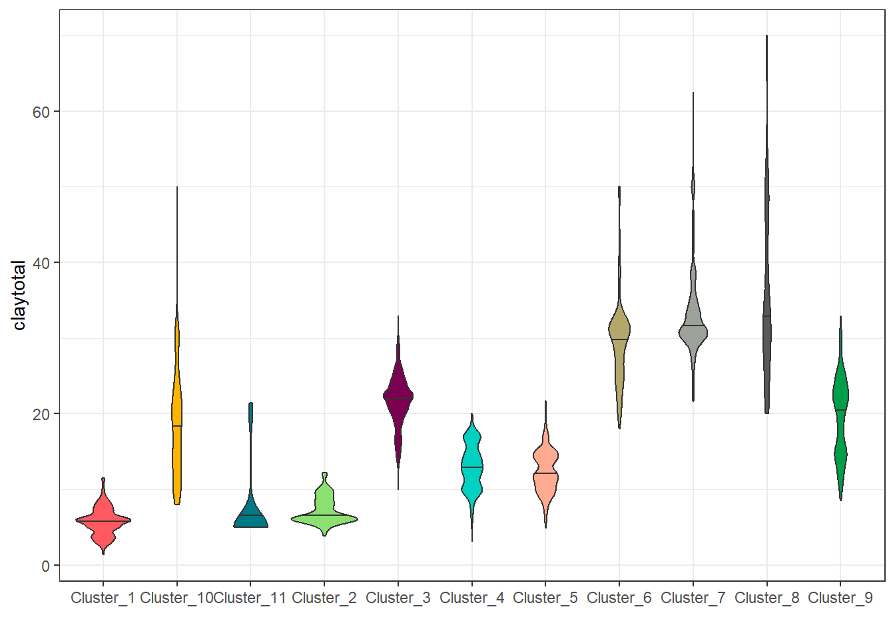
plot_cluster_violins(kcol = k_11, om, prop_df = prop1) + scale_y_log10()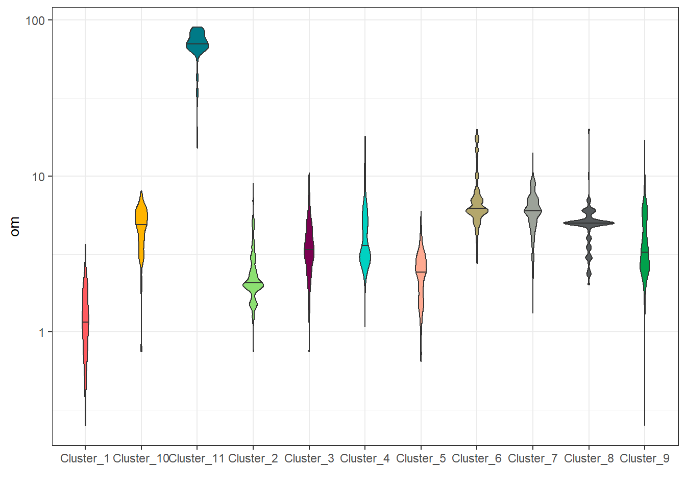
plot_cluster_violins(kcol = k_11, ph1to1h2o, prop_df = prop1)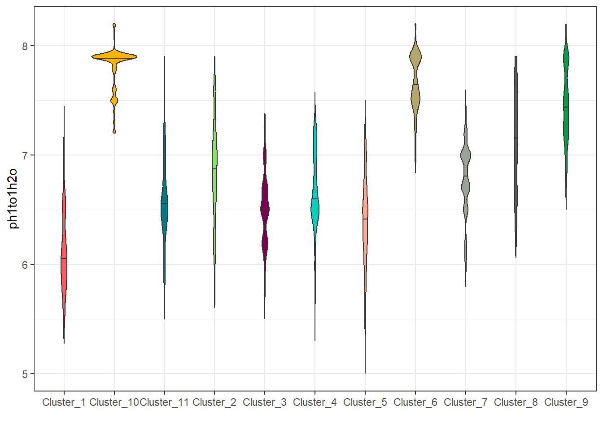
plot_cluster_violins(kcol = k_11, caco3, prop_df = prop1)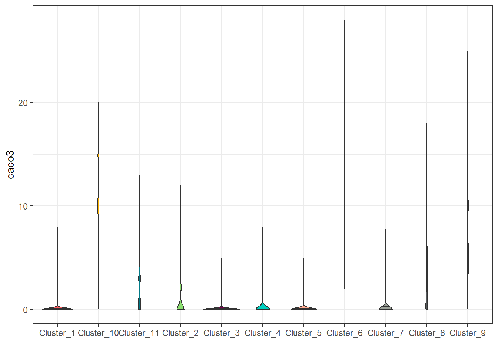
plot_cluster_violins(kcol = k_11, ec, prop_df = prop1)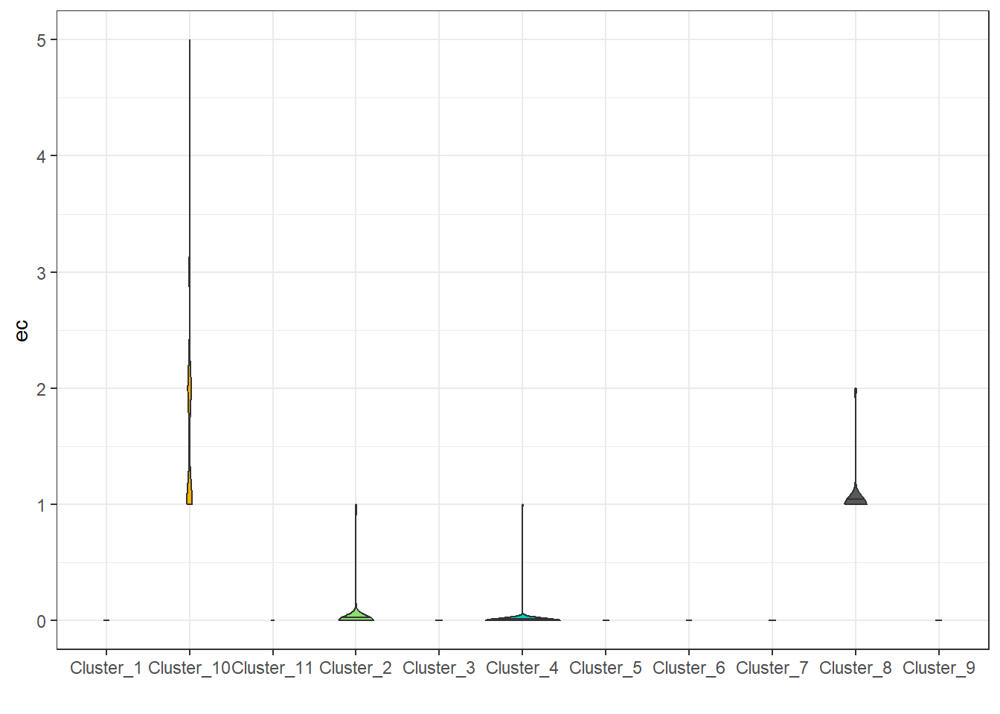
16.5.3 Taxonomy
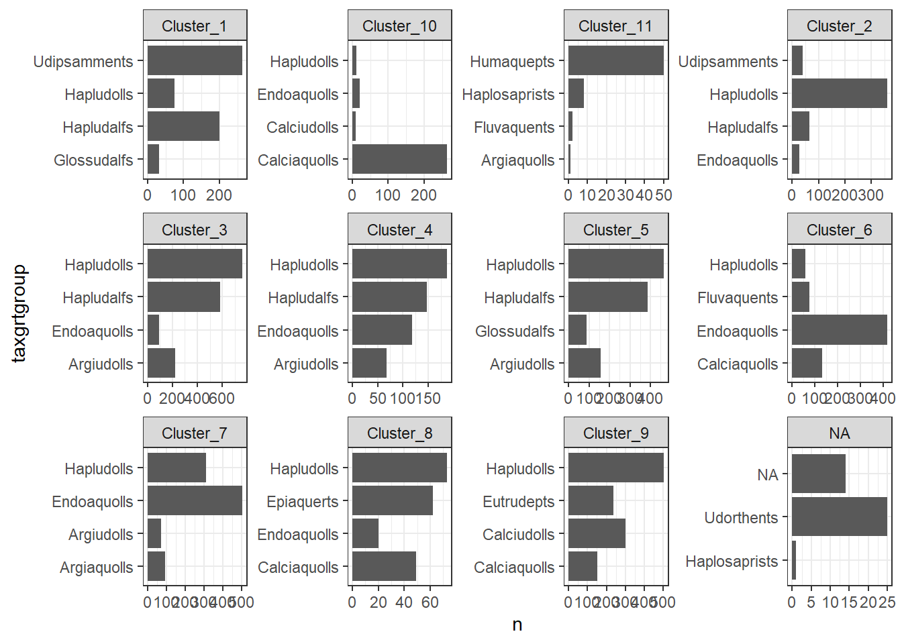